关于Deep Learning与RNA inverse folding的文献
上周正在摸鱼，突然看见导的zoom发了个邮件：“xxx invites you …… at 11:30"还以为改时间了，但是看见原本9点半的链接还没取消，于是开会那天ppt的理论部分还没做，9点半进去看看情况（万一选择这个时候开始呢），结果听到，”好的我们开始吧“。
于是，卒。
预料内的被批评了，毕竟ppt只有实验没有原理，被训也是正常。这周啥也不干了，好好读文献吧，要不然怎么在文章里tell(吹) a(牛) story(呢)，下周一个个汇报。此处我就简单写一些我认为相对有启发的内容。
A Hyperbolic Discrete Diffusion 3D RNA Inverse Folding Model for functional RNA design
开幕雷击，这是一篇刊，快50页，读死我了。简称这个为RIdiffusion吧。
Abstract&Introduction
- Background: revolutionary opportunities for diverse RNA-based biotechnologies and biomedical applications.
primary goal of RNA inverse folding is to design nucleotide sequences that can fold into a given RNA secondary or tertiary structure.
- Challenge: limited availability of experimentally derived 3D structural data and unique characteristics of RNA 3D structures; existing tools either focus on 2D inverse folding tasks or learn limited 3D structural features from experimentally determined and predicted 3D structure datasets for the 3D inverse folding problem.
- High-resolution RNA structures are significantly less common compared to those of proteins.
RIdiffusion, a hyperbolic denoising diffusion generative RNA inverse folding model.
RIdiffusion efficiently recovers the distribution of nucleotides for targeted RNA 3D structures based on limited training samples using a discrete diffusion model.
事实上背景一般都是车轱辘话，但是不同的文章聚焦的challenge不一样。本文章最令我印象深刻的地方在于其利用geometric deep learning和discrete diffusion model结合起来，而且评估的很细致，工作量很够。
- structure based.
- the promise of creating novel functional RNAs.
The “low-sample” challenge underscores the importance of learning efficiency in generative models in 3D RNA inverse folding tasks.说白了，数据少，那就学的高效，就这意思。
关于Diffusion: 把inverse folding 想象成diffusion的denoising过程。
之后通过生物学知识: RNA structures exhibit inherent hierarchical organization (e.g., from base-paring, secondary structure elements and remote pseudoknots to complex 3D shapes)引出hyperbolic space.
为什么要提及这个呢？因为
compared to Euclidean space, a hyperbolic distance better captures molecular differences and improve performance in small molecule generation tasks
也就是说这个hb比euc更能展现结构特征，或者说，更能体现subtle structural的区别。作者通过以下这张图来介绍：
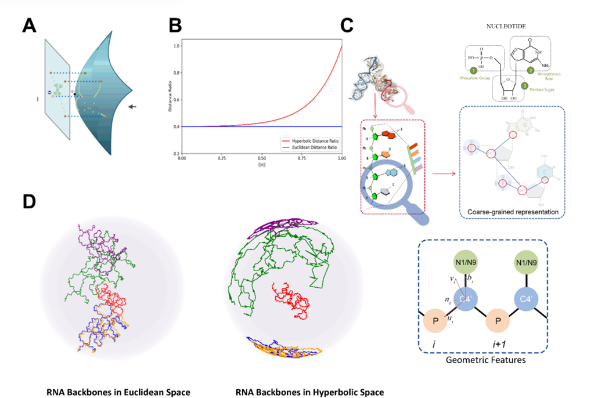我们其实重点关注A,D就行，A是变换的一个图示结构，D是rna结构铺在hb空间里的形态，简而言之，不同chain（或者backbone）分开了，也就更好捕捉特征。
模型概况
hyperbolic equivariant graph neural networks (HEGNNs) to parameterize the discrete diffusion model, and effectively capture the 3D structural characteristics by incorporating RNA’s geometric features and topological properties into the generation process.
整个的framework如图：
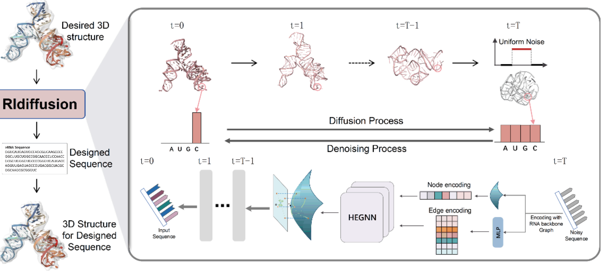MATERIALS AND METHODS
这部分写的好细好牛，我大部分看不懂，简单说一个Hyperbolic Equivariant Graph Denoising Network，
一般的模型处理这种3D数据的时候会丢失数据，
因而作者utilize SE(3) equivariant neural layers from Equivariant Graph Neural Networks (EGNN).49 This approach allows the model to preserve SO(3) rotational equivariance and E(3) translational invariance when updating the representations of nodes and edges, thereby retaining geometric information and ensuring the robustness and effectiveness of the hidden representations, to enable the EGNN network to update edge.其实就是加了个层。
Datasets and Setup
实际上我更在意作者如何split的？
We followed the same splitting methods outlined in RDesign to ensure a high-quality dataset with only experimentally derived structures, which consists of 1773 structures for training, 221 structures for validation, and 223 structures for testing in an 8:1:1 ratio.
这也是按照8:1:1分的，所以我现在遇到的事情思考的确实没啥毛病。
除此之外，为了评价泛化能力，作者用PSI-CD-HIT，基于nucleotide similarity来cluster数据 , 并setting similarity thresholds of 0.8, 0.9, and 1.0。
Evaluation Metrics
本文的评估标准我很感兴趣，除了我们通常用的RR，还提出了Macro-F1 score，我贴个引用：
The Macro-F1 score is used to assess the accuracy and comprehensiveness of the model in predicting protein or RNA sequences, particularly in cases where the distribution of different letter residues is imbalanced, by evaluating the Macro-F1 score for each residue in the sequence.
叽里咕噜唧唧歪歪说什么呢，没看懂，太生物学了。和我的3.98rmb/h的炼丹炉说去吧。
$$ NoveltyScore(x_i) = 1.0 - RecoveryRate(x_i,x_{mostsimilar}) $$还有一个GSN, Global-scale Novelty，就是100个样本按照RR分层来抽。
以及和SCC很像的，基于RhoFold折叠后再用US-align计算结构相似性也就是RMSD.
Baselines
作者拿几个老熟人来对比，包括1个RNA tertiary structure inverse folding model, 仨protein tertiary structure inverse folding baselines, 1个Transformer-based graph GNN network for graph structure: gRNAde, PiFold, StructGNN, GVP-GNN, and GraphTrans. 虽然没搞懂为什么用蛋白质模型来预测rna，不过看来好像是在rna数据集上面重新训练了一下作对比试验。至于RiboDiffusion与RhoDesign，确实没有提供训练脚本也没办法控制超参数。
Results
其实不用看就知道，肯定这好那好嘛，要不然发出来干啥。不过我注意到作者：
we divided the dataset of seq-0.8 into short (<50nt), medium (50~100nt), and long (>100nt)
嗯？这样划分吗？其实也行，和RiboDiffusion的划分一致。
至于以下的我贴个原文，其实云里雾里的：
The novelty of generative designs can be viewed from two perspectives: sequence novelty and physicochemical properties novelty. In our case, sequence and physicochemical properties (derived from sequence) novelty are important in RNA 3D inverse folding. Indeed, sequence features such as physicochemical properties play a crucial role in functional RNA design. For instance, it was reported that natural RNAs show privileged physicochemical property space which is related to their biological functions. Other sequence features like GC content are important properties related to developability of RNA molecules. Given the nature of one-to-many relationship between the targeted RNA structure and its possible sequences, the novelty and diversity of generated sequences are important considerations for improving physicochemical properties of the designed sequences.
涉及生物学知识比较多，还有类似于理化特性的。
之后抽样进行physicochemical properties space的评估。就是说三个部分应该有区别。
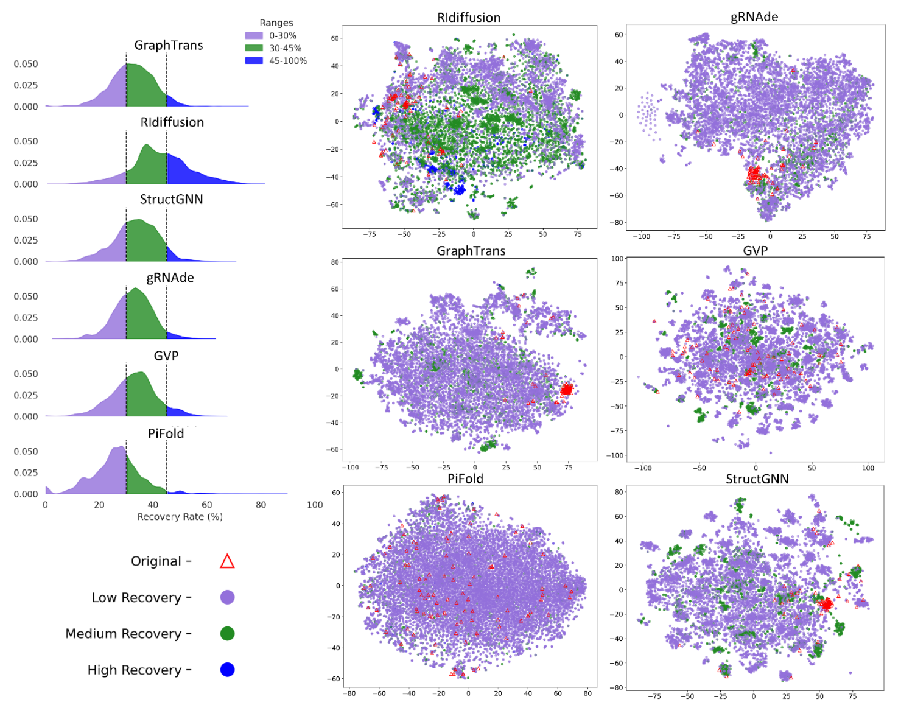Beyond RNA Structure Alone: Complex-Aware Feature Fusion for Tertiary Structure-based RNA Design
Abstract
- important in synthetic biology and therapeutics
- limitation: overlook the role of complex-level information
事实上作者的观点是，光分析rna不行，还得去看有关系的complexes。
our method incorporates protein features extracted by protein language model (e.g., ESM-2)
没看懂，为什么要用蛋白质的feature来拟合rna？宛宛类卿是吗？
To address bio-logical complexity of protein-RNA interactions, propose a distance-aware filtering for local features from protein representation.
a high-affinity design framework that combines our CARD with an affinity evaluation model.
多了个evaluation吗？有点意思。
Final goal: produce high-affinity RNA sequences
Introduction
- more sophisticated computational approaches that can model the complex relationship between RNA sequences and their structures.
作者提到了基于RL的LEARNA和Meta-LEARNA，基于3D图的RDesign和RhoDesign。
- different from protein folding which roughly follows Anfinsen’s rule, RNAs are highly flexible and rely on interactions with proteins, DNA, and other biomolecules to achieve folding，又是一个表述rna结构灵活多变的。
- RNAs may adopt various conformations by interacting with distinct macromolecules at different stages of functioning.不同阶段还会与大分子结合。
考虑到OVERLOOK那些information的局限性，那就加上不就得了。
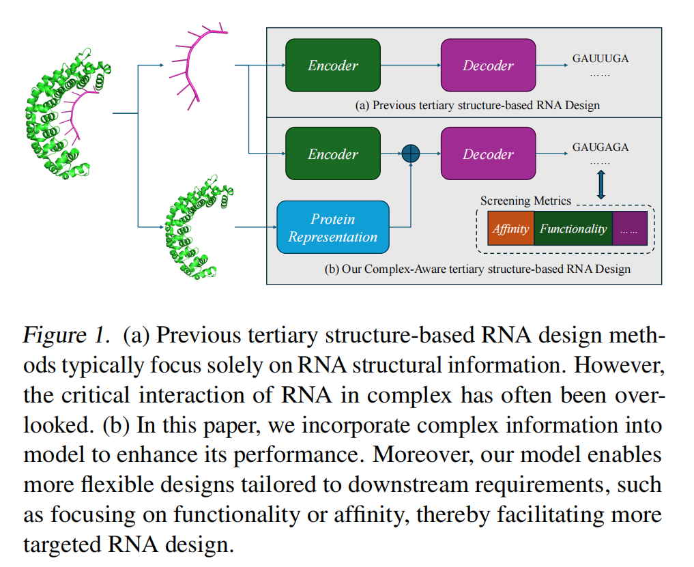本文就是考虑rna结构特征与protein-RNA的情况，综合生成序列。
Outline也如图一，有一个pre-trained protein language model (PLM)来处理蛋白质，以及Complex-Aware Transformer (CAFormer)来结合rna与蛋白质的特征，利用distance-aware filtering来选择作用区域忽略无关区域影响，以上使模型能够捕捉蛋白质-RNA复合物上下文信息并聚焦于复合体内部的相互作用区域。
整体而言，作者迭代筛选生成的RNA序列，候选序列先根据预测的亲和力分数进行过滤，再通过多重折叠模型进行结构兼容性验证。
Affinity Evaluation
关于“亲和力”，作者提到了预测模型PNAB，DeePNAP，PredPRBA, PRdeltaGPred and PRA-Pred。
然而RNA-protein complex结构数据太稀缺，CoPRA 整合了PRA310并提出multi-modal model，模型将RNA和蛋白质大型语言模型与全面的结构信息相结合。
蚊香小课堂
作者提到inverse folding的发展与背景：
RNA design aims to generate sequences that fold into predefined structures. Early methods focused on secondary structure optimization, using thermodynamic parameters and energy minimization. Tools like RNAfold predict RNA secondary structures based on the minimum free energy principle. As understanding of RNA structure has advanced, focus has shifted to complex tertiary structure-based design due to RNA’s high conformational flexibility, which challenges traditional thermodynamic methods. Recent deep learning approaches for RNA tertiary structure design include gRNAde, which utilizes geometric deep learning and graph neural networks to generate RNA sequences; RiboDiffusion, a diffusion model for inverse folding leveraging RNA backbone structures; RDesign, which employs a data-efficient learning framework with contrastive learning for tertiary structures; and Rhodesign, focusing on RNA aptamer design by guiding sequence generation through structural predictions.
从热力学参数和能量最小化原理，到基于深度学习来预测rna。其实可以结合吧？
Methods
作者的pipeline：
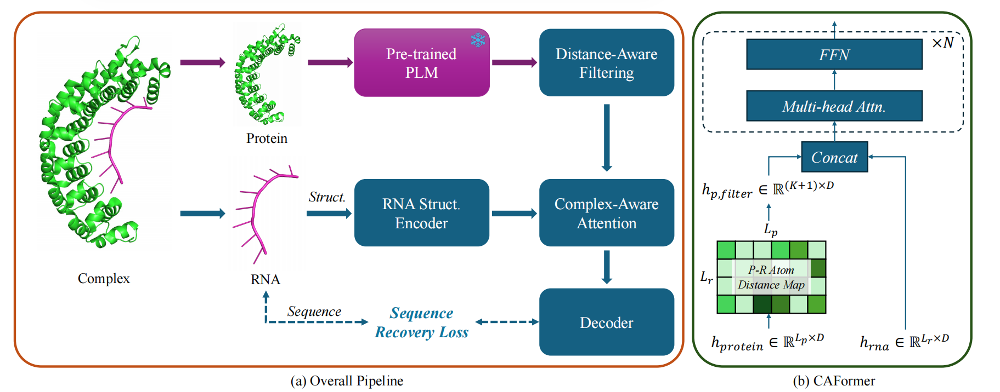倒是比较完整。对于那个滤波器，由于一个蛋白质可能通过多个结合位点（不同构象）与RNA结合，同时单个RNA也能与不同蛋白质相互作用，作者给出以下图来说明：
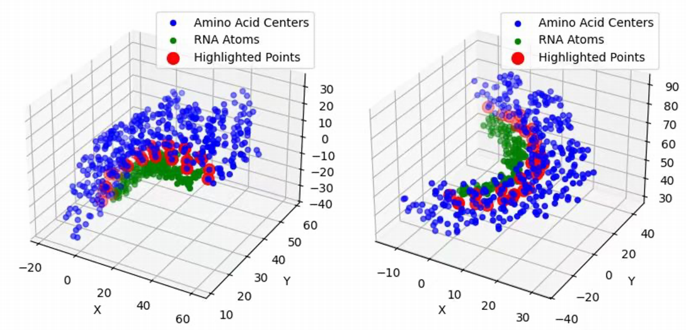COMPLEX-AWARE ATTENTION BLOCK
关于这个部分，作者先把rna和过滤的蛋白质信息拼接，并用了N个multi-head self-attention来增强上下文捕捉能力。
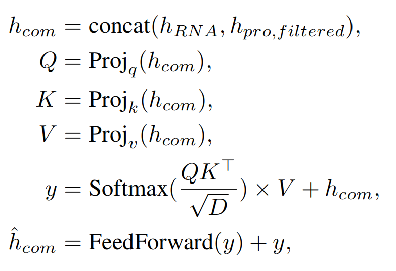之后采用了类似于RhoDesign的基于Transformer的解码器来生成RNA序列。解码过程被构建为一个下一个标记预测任务，其中解码器基于先前的标记预测下一个核苷酸。在训练过程中，模型通过使用交叉熵损失进行训练。
High-Affinity RNA Design Framework
- structure-to-sequence design model and evaluation tools.
先通过作者的模型进行设计，生成符合复合约束条件（如结合位点和相互作用）的定制化RNA序列；对序列利用PRA201数据集上训练的集成回归模型来评估，对结构利用AlphaFold3、RhoFold和RoseTTAFold2NA等来折叠后算RMSD，每次筛选前10%∼20%的序列，迭代直到最优。
Experiments
Dataset and Implementation Details
- Datasets: PRI30K and PRA201.
- 后者用于blind test，前者剔除结构相似之类的用于训练与测试，处理后是21,050个蛋白质-RNA配对和2,309条RNA序列的数据集。Cluster也是用的CD-HIT，相似性80%。
- 200 epochs, batch size of 48 (24 per GPU), attention blocks N = 6, local filtered size K = 64, ESM-2 650M提取蛋白质表征。
- 评比模型：SeqRNN and SeqLSTM, StructGNN, GraphTrans, RDesign, and RhoDesign.
Ablation Studies
key components of method, including the number of attention blocks in CAFormer, the fashion of filtering the protein representation, and the choices of protein representation model.
随着CAFormer模块数量增加，性能呈现持续提升趋势；其他指标就一一测试就行。
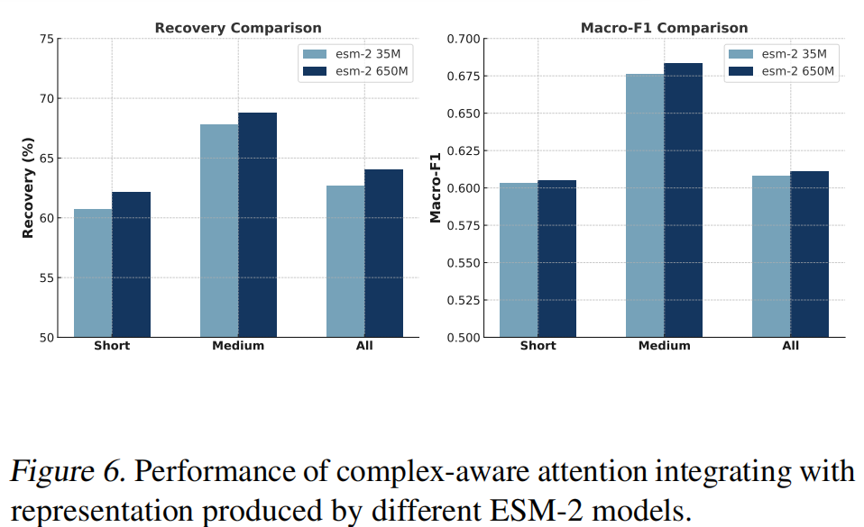根据作者之前的流程，“亲和力设计"能展现出比天然RNA序列更高的结合亲和力其他的conclusion我就不多嘴了。
RiboDiffusion: tertiary structure-based RNA inverse folding with generative diffusion models
我就只写重点吧：
Abstract:
-
scarcity of data, nonunique structure-sequence mapping, flexibility of RNA conformation.
-
growing applications in synthetic biology and therapeutics;
-
inverse folding problem;
Introduction:
-
RNA-based biotechnology;
-
early methods for focus on folding into RNA secondary structures; Some use efficient local search strategies guided by the energy function; Or globally by modeling the sequence distribution or directly manipulating diverse candidates;
-
DAS physically based approach, but still constrained by local design strategy and computational efficiency.
– only 2D, without considering 3D structures of RNA
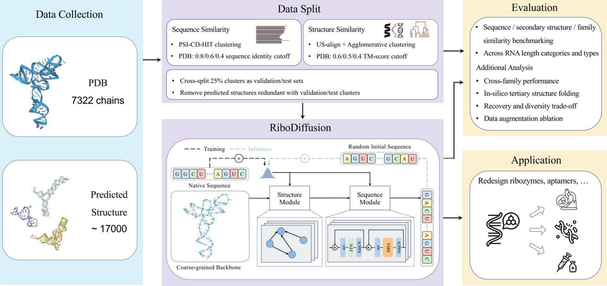Methods:
Diffusion;
Three-atom coarse-grained representation including the atom coordinates of C4’, C1’, N1 (pyrimidine) or N9 (purine) for every nucleotide;
Consider the RNA inverse folding problem as modeling the conditional distribution p(S|X);
Based on the GVP-GNN architecture;
Results
Dataset: predicting structures with RhoFold. The structures predicted from RNAcentral sequences are filtered by pLDDT to keep only high-quality predictions, resulting in 17 000 structures.
Cluster: sequence–PSI-CD-HIT to cluster sequences based on nucleotide similarity. We set the threshold at 0:8=0:6=0:4 and obtain 1252=1157=1114 clusters; structure similarity clustering, calculate the TM-score matrix using US-align and apply scipy, achieve 2036=1659=1302 clusters with TM-score thresholds of 0:6=0:5=0:4. 15% for testing, 10% for validation.
Evaluation Metrics:
RR, F1 Score(RNAfold and RMSD)
Learning to Design RNA
Abstract:
-
Based on deep reinforcement learning;
-
Jointly optimize over a rich space of architectures for the policy network, the hyperparameters of the training procedure and the formulation of the decision process.
Introduction:
-
LEARNA: deep RL algorithm for RNA Design. Given a target secondary structure, can predict the entire RNA sequence. After generating an RNA sequence, then folds this and locally adapts it, and uses the distance of the resulting structure to the target structure as an error signal for the RL agent;
-
Meta-LEARNA: learns a single policy across many RNA Design tasks directly applicable to new RNA Design tasks;
-
The first application of architecture search (AS) to RL;
-
New benchmark dataset with an explicit training, validation and test split;
-
Faster.
THE RNA DESIGN PROBLEM:
-
Folding algorithm: zuker;
-
Loss Function: Hamming diastance.
LEARNING TO DESIGN RNA:
Action Space, State Space, Transition Function, Reward Function;
-
One problem of current deep reinforcement learning methods is that their performance can be very sensitive to choices regarding the architecture of the policy network, the training hyperparameters, and the formulation of the problem as a decision process.
-
RL often yield noisy or unreliable outcomes in single optimization runs, (a) The number of unsolved sequences, (b) the sum of mean distances, (c) the sum of minimum distances to the target structure.
RNA-DCGen: Dual Constrained RNA Sequence Generation with LLM-Attack
-
Challenge: recent diffusion and flowmatching-based models face two key limitations: specialization for fixed constraint types, such as tertiary structures, and lack of flexibility in imposing additional conditions beyond the primary property of interest.
-
Generative –> Search;
-
Dual Constrained: on the sequence itself and on specified constraints.
不是哥们，现在在训练好的模型上面调参都能发顶会吗？
就读到这里吧，现在真是八仙过海各显神通了说是。赶紧赶mitx课程的ddl了，吐了。
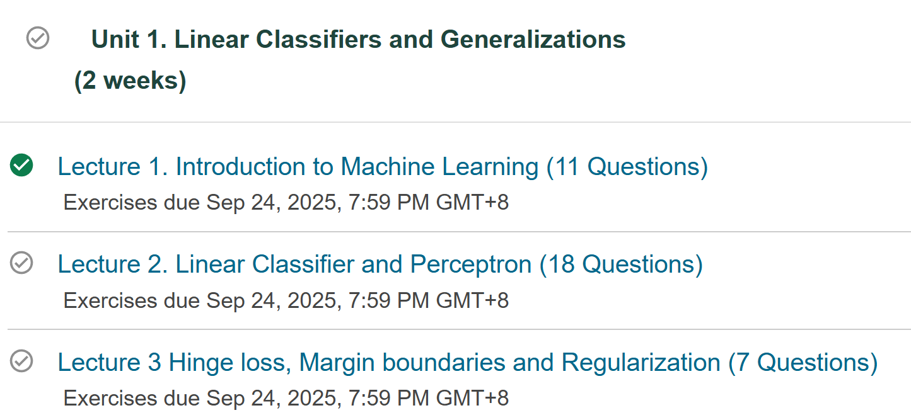关于Long-Range的识别与预测的文献
找到motivation了不？其实找到了，就是识别long rna sequence嘛，问题是我们的multiscale光这个不够，需要多看论文多找多想。
其实本周算是找了一堆没啥用的SOTA文章汇报（最起码对现在的研究没啥用），一周读了二十来篇论文但是白白浪费时间（当然也有好处，最起码熟悉了背景）。刚才我和老师大眼瞪小眼，咋汇报的文献没啥idea启发嘞？因此导师建议去找：
mamba gnn, long protein seq, long molecule, long-range gnn, long-range attention
那么加上attention is all you need这篇transformer的文章，和讲multiscale的文章，本周再来一轮汇报。其实找到了这些，但是有作用的不多。
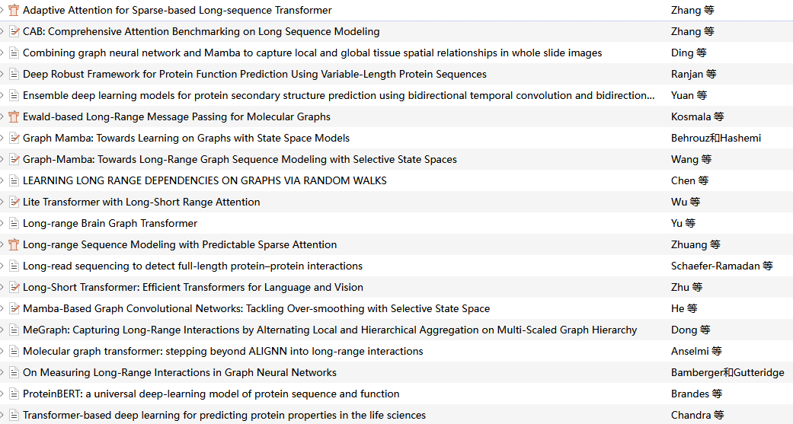
Game over. 已老实。